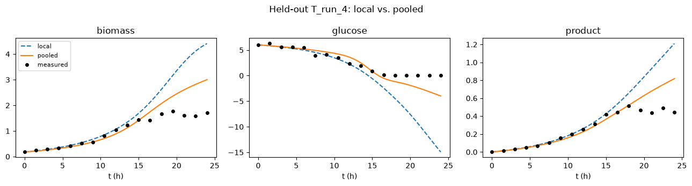

Knowledge Transfer¶
Pooling data from several products to help a data-poor new one, using a constant-valued controlled process variable to mark which product each run belongs to. An ensemble of Gaussian processes, anchored to real training data, does the pooling.
Inspired by Helleckes et al. 2024 [1], whose headline result is
that pooling data across products, “horizontal knowledge transfer,” measurably helps
a new product with few runs of its own, provided the historical products actually
resemble it. This page reproduces that qualitative result natively in hybrax.train,
on synthetic data, using an ensemble version of Gaussian process’s
GPReactionModule, trained by gradient descent through the ODE solve and pooled through
a controlled process variable rather than the paper’s own maximum-likelihood fit and
one-hot or learned-embedding pooling.
The walkthrough below shows the file in pieces, next to the reasoning for each one.
The Ensemble¶
EnsembleGPReactionModule extends Gaussian process’s
GPReactionModule to K heads, each anchored to a bootstrap subsample of the same
real (centers, targets) pairs. centers pairs real (state, is_new_product)
locations with targets, the real rate estimate at that same state,
bootstrap-resampled together per head so a center never gets separated from its own
target. Only the kernel hyperparameters (log_lengthscale, log_output_scale,
log_noise) are trained.
1 return [
2 np.concatenate(
3 [a, np.repeat(a[-1:], max_m - a.shape[0], axis=0)], axis=0
4 )
5 for a in arrs
6 ]
7
8 self.centers = jnp.asarray(np.stack(pad(centers_list), axis=0))
9 self.targets = jnp.asarray(np.stack(pad(targets_list), axis=0))
10
11 self.log_lengthscale = jnp.zeros((n_members, n_features))
12 self.log_output_scale = jnp.zeros(n_members)
13 self.log_noise = jnp.full((n_members,), -2.0)
14
15 @staticmethod
16 def _kernel(a, b, log_ls, log_out):
17 diff = (a[:, None, :] - b[None, :, :]) / jnp.exp(log_ls)
18 return jnp.exp(log_out) * jnp.exp(-0.5 * jnp.sum(diff**2, axis=-1))
19
20 def _chol(self, centers_k, log_ls_k, log_out_k, log_noise_k):
21 k_zz = self._kernel(centers_k, centers_k, log_ls_k, log_out_k)
22 k_zz = k_zz + jnp.exp(log_noise_k) * jnp.eye(centers_k.shape[0])
23 return jsl.cho_factor(k_zz, lower=True)
24
25 def __call__(self, t, inputs: ReactionInputs) -> ReactionOutputs:
26 del t
27 x_phys = jnp.concatenate([inputs.SCL_modeled_RMCs, inputs.SCL_controlled_PVs])[
28 None, :
29 ]
30
31 def per_member(centers_k, log_ls_k, log_out_k, log_noise_k, targets_k):
32 chol = self._chol(centers_k, log_ls_k, log_out_k, log_noise_k)
33 k_xz = self._kernel(x_phys, centers_k, log_ls_k, log_out_k)
34 return (k_xz @ jsl.cho_solve(chol, targets_k))[0]
Each head runs the same closed-form GP posterior GPReactionModule does, vmapped
across all K heads at once. The final prediction is the mean across heads; the
spread across heads stands in for rate_std. This mirrors Helleckes et al.
2024’s [1] own “mean averaging ensemble… 30 GP
models, each subsampling 50% of the training data experiments,” scaled down to 5
heads here for tractability.
Fitting the Ensemble¶
1
2 def per_member_nll(centers_k, log_ls_k, log_out_k, log_noise_k, targets_k):
3 chol = self._chol(centers_k, log_ls_k, log_out_k, log_noise_k)
4 alpha = jsl.cho_solve(chol, targets_k)
5 n_points, n_rates = targets_k.shape
6 data_fit = 0.5 * jnp.sum(targets_k * alpha)
7 log_det = n_rates * jnp.sum(jnp.log(jnp.diagonal(chol[0])))
8 n_terms = n_points * n_rates
9 return (data_fit + log_det + 0.5 * n_terms * jnp.log(2 * jnp.pi)) / n_terms
10
11 nlls = jax.vmap(per_member_nll)(
12 self.centers,
13 self.log_lengthscale,
14 self.log_output_scale,
15 self.log_noise,
16 self.targets,
17 )
18 return jnp.mean(nlls)
19
20
21def build_reaction_module(*, seed, training_parent_collection, **kwargs):
22 scale_kwargs = {k: v for k, v in kwargs.items() if k.startswith("SCALE_")}
23 first_process = next(iter(training_parent_collection.processes.values()))
24 rhs = build_rhs_ode(first_process)
25 rmc_names = list(rhs.name_modeled_RMCs)
26 rmc_scaler = scale_kwargs["SCALE_modeled_RMCs"]
27 rate_scaler = scale_kwargs["SCALE_modeled_ReactionOde_rates"]
28
29 centers_list, targets_list = [], []
30 for process in training_parent_collection.processes.values():
31 process.pseudobatch_transform = build_pseudobatch_transform(process)
32 meas_times = np.asarray(
33 process.reactor_medium.components["biomass"].concentration.times
34 )
35 splines = {
36 name: build_backtransform_spline(process, name) for name in rmc_names
37 }
38 values = {name: np.asarray(splines[name](meas_times)) for name in rmc_names}
39 derivatives = {
40 name: np.asarray(splines[name].derivative()(meas_times))
41 for name in rmc_names
42 }
43 biomass = values["biomass"]
44
45 # Specific rates: "<species>' = q_<species> * biomass". Drop the first 3
46 # (of 17) samples: near the small inoculum, a derivative over a near-zero
47 # biomass is fragile (rate std drops 8.3 -> 2.5 dropping these 3, vs. 4.4
48 # dropping just the first).
49 n_drop = 3
For every process, hybrax.format.splines.build_pseudobatch_transform() and
hybrax.format.splines.build_backtransform_spline() fit a smooth spline
through the real measured concentrations, the same real-rate-estimation machinery
GPReactionModule uses. Calling .derivative() and dividing by the real biomass
value turns it into a real specific rate, matching the declared ODE. The first 3
(of 17) samples of every process get dropped first: biomass is still near its
small inoculum value there, and a derivative divided by a small denominator is
unreliable. is_new_product becomes one more centers column.
1 means = jax.vmap(per_member)(
2 self.centers,
3 self.log_lengthscale,
4 self.log_output_scale,
5 self.log_noise,
6 self.targets,
7 )
8 mean = jnp.mean(means, axis=0)
9 rate_std = jnp.std(means, axis=0)
10 return ReactionOutputs(
11 SCL_modeled_ReactionOde_rates=mean,
12 SCL_modeled_Outflows_rates=jnp.zeros(0),
13 SCL_modeled_Inflows_rates=jnp.zeros(0),
14 auxiliary={"rate_std": rate_std},
15 )
16
17 def marginal_nll(self) -> jax.Array:
18 """Real GP negative log marginal likelihood, averaged across heads.
19
20 Fits each head's kernel hyperparameters the way a textbook GP does:
21 maximizing the probability of that head's real (centers, targets)
marginal_nll is the standard GP negative log marginal likelihood, computed
per-head from that head’s own real centers and targets, then averaged across
the K heads. It’s the quantity a textbook GP fit maximizes, reusing the same
_chol every head’s own posterior already computes.
1 [derivatives[name][n_drop:] / biomass[n_drop:] for name in rmc_names],
2 axis=1,
3 )
4
5 scl_state = np.asarray(rmc_scaler.scale_value(jnp.asarray(raw_state)))
6 is_new = float(process.process_variables["is_new_product"].values.value)
7 pv_col = np.full((scl_state.shape[0], 1), is_new)
8 centers_list.append(np.concatenate([scl_state, pv_col], axis=1))
9
10 # A rate is a derivative, so it uses scale_derivative: an affine
11 # scaler's offset (if any) is never subtracted from it.
12 targets_list.append(
13 np.asarray(rate_scaler.scale_derivative(jnp.asarray(raw_rate)))
14 )
15
16 centers_pool = np.concatenate(centers_list, axis=0)
17 targets_pool = np.concatenate(targets_list, axis=0)
18
19 return EnsembleGPReactionModule(
20 key=jax.random.key(seed),
21 centers_pool=centers_pool,
22 targets_pool=targets_pool,
23 **scale_kwargs,
24 )
25
26
27class EnsembleGPLossModule(DefaultLossModule):
EnsembleGPLossModule adds one more named loss, gp_nll, to the usual per-target
trajectory MSE terms, exactly like GPReactionModule’s own loss module. Both
terms drive the same gradient step: the trajectory loss keeps the whole ensemble
anchored to the real measured concentrations, and gp_nll fits every head’s
kernel hyperparameters the way a real GP does. nll_weight scales gp_nll down
to keep it in the same rough range as the trajectory terms, since hybrax.train
averages named losses.
Local vs. Pooled¶
local INFO __main__: training complete: first_mean_loss=0.00353516 last_mean_loss=0.00112781 delta=-0.00240735
pooled INFO __main__: training complete: first_mean_loss=0.0143907 last_mean_loss=0.00738624 delta=-0.00700441
run directory: ./source/_data/out/runs/gallery_knowledge_transfer
Both runs use the identical architecture, epoch budget and learning rate: only the
training data differs. local sees T’s 2 training runs alone; pooled sees those
plus all 24 historical runs (4 products × 6 runs each).
Evaluating on the Held-Out Runs¶
The real test is T’s 2 held-out runs, never seen by either model. T’s training
runs sit in a narrow initial-condition slice (S0 12-14 g/L); its held-out runs sit
at the extremes of a much wider range (S0 6 and 26 g/L) that only the historical
products actually cover.
target local pooled
biomass -0.9749 0.5683
glucose -1.8681 0.4789
product -0.2128 0.7492
local’s R² is strongly negative, a real extrapolation failure. Trained
only on S0 12-14 g/L, it never saw glucose run out at the held-out run’s lower
S0, so it keeps extrapolating the exponential growth phase it learned instead of
saturating. pooled recovers because the historical products, sampled across the
full design space, give the model real information about what happens at both
extremes, even though their exact kinetics differ from T’s.

local (dashed) tracks the measured points until roughly t=13h, then diverges hard:
it keeps extrapolating the growth phase it learned from S0 12-14 g/L data, well past
where this run’s lower S0 actually runs out of glucose. pooled (solid) stays on the
measured trajectory throughout.
Gotchas¶
Pooling only helps if the historical products actually resemble the target. With dissimilar kinetics, one model has to reconcile mostly-unrelated products: pooled can end up worse than local. This matches Helleckes et al. 2024’s [1] own finding: “in case the historical data are more heterogeneous… OHE models performed more similarly to local models,” i.e. pooling’s benefit shrinks toward zero as similarity drops.
A fair “local” baseline needs held-out data outside its training coverage. If a data-poor model’s held-out runs are drawn from the same narrow initial-condition range as its training runs, it can look deceptively good. Test on conditions the training runs did not cover, the way real “few experiments for a new product” data actually looks.
A constant-valued controlled PV does not scale to many products without a real embedding. One-hot works for a handful of products; Hutter et al. [2] use a learned embedding instead once the product count grows.
build_reaction_moduleneedingtraining_parent_collection(to pull real anchor data) is the one place this page’s hook signature differs from every simpler gallery page’s(*, seed, **kwargs).
See Also¶
The full, runnable example (custom.py, configs, data) lives in
examples/gallery_knowledge_transfer/ at the repo root, no docs build required. This
page’s own executed run is at ./source/_data/out/runs/gallery_knowledge_transfer/.
Gaussian process: the single-GP version this builds on.
Fed-batch: another reaction module reading a controlled PV as a real input, the same mechanism
is_new_productuses here.Scaling:
Scaler.scale_value()/scale_derivative(), used insidebuild_reaction_modulehere to convert real states and real rate estimates to SCL space.
References¶
Helleckes, L. M., Wirnsperger, C., Polak, J., Guillén-Gosálbez, G., Butté, A., & von Stosch, M. (2024). Novel calibration design improves knowledge transfer across products for the characterization of pharmaceutical bioprocesses. Biotechnology Journal, 19(7), e202400080. https://doi.org/10.1002/biot.202400080
Hutter, C., von Stosch, M., Cruz Bournazou, M. N., & Butté, A. (2021). Knowledge transfer across cell lines using hybrid Gaussian process models with entity embedding vectors. Biotechnology and Bioengineering, 118(11), 4389-4401. https://doi.org/10.1002/bit.27907